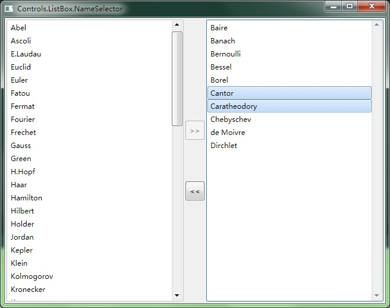

ListBox.NameSelector

#include "..\..\Public\Source\GacUIIncludes.h"
#include <Windows.h>
// for SortedList, CopyFrom and Select
using namespace vl::collections;
int CALLBACK WinMain(HINSTANCE hInstance, HINSTANCE hPrevInstance, LPSTR lpCmdLine, int CmdShow)
{
return SetupWindowsDirect2DRenderer();
}
const wchar_t* DataSource[]=
{
L"Weierstrass",
L"Cantor",
L"Bernoulli",
L"Fatou",
L"Green",
L"S.Lie",
L"Euler",
L"Gauss",
L"Sturm",
L"Riemann",
L"Neumann",
L"Caratheodory",
L"Newton",
L"Jordan",
L"Laplace",
L"Wiener",
L"Thales",
L"Maxwell",
L"Riesz",
L"Fourier",
L"Noether",
L"Kepler",
L"Kolmogorov",
L"Borel",
L"Sobolev",
L"Dirchlet",
L"Lebesgue",
L"Leibniz",
L"Abel",
L"Lagrange",
L"Ramanujan",
L"Ljapunov",
L"Holder",
L"Poisson",
L"Nikodym",
L"H.Hopf",
L"Pythagoras",
L"Baire",
L"Haar",
L"Fermat",
L"Kronecker",
L"E.Laudau",
L"Markov",
L"Wronski",
L"Zermelo",
L"Rouche",
L"Taylor",
L"Urysohn",
L"Frechet",
L"Picard",
L"Schauder",
L"Lipschiz",
L"Liouville",
L"Lindelof",
L"de Moivre",
L"Klein",
L"Bessel",
L"Euclid",
L"Kummer",
L"Ascoli",
L"Chebyschev",
L"Banach",
L"Hilbert",
L"Minkowski",
L"Hamilton",
L"Poincare",
L"Peano",
L"Zorn",
};
class NameSelectorWindow : public GuiWindow
{
private:
GuiTextList* listSource;
GuiTextList* listDestination;
GuiButton* buttonAdd;
GuiButton* buttonRemove;
static list::TextItem GetTextItem(GuiTextList* list, int index)
{
return list->GetItems()[index];
}
static int CompareTextItem(list::TextItem a, list::TextItem b)
{
return _wcsicmp(a.GetText().Buffer(), b.GetText().Buffer());
}
static int ReverseCompareInt(int a, int b)
{
return b-a;
}
void MoveNames(GuiTextList* from, GuiTextList* to)
{
CopyFrom(
to->GetItems(),
to->GetItems()
>>Concat(
from->GetSelectedItems()>>Select(Curry(GetTextItem)(from))
)
>>OrderBy(CompareTextItem)
);
List selectedItems;
CopyFrom(
selectedItems.Wrap(),
from->GetSelectedItems()
>>OrderBy(ReverseCompareInt)
);
FOREACH(int, index, selectedItems.Wrap())
{
from->GetItems().RemoveAt(index);
}
}
void LoadNames(GuiTextList* list)
{
// Use linq for C++ to create sorted TextItem(s) from DataSource
CopyFrom(
list->GetItems(),
FromArray(DataSource)
>>OrderBy(_wcsicmp)
>>Select(
[](const wchar_t* name){return list::TextItem(name);}
)
);
}
void buttonAdd_Clicked(GuiGraphicsComposition* sender, GuiEventArgs& arguments)
{
MoveNames(listSource, listDestination);
}
void buttonRemove_Clicked(GuiGraphicsComposition* sender, GuiEventArgs& arguments)
{
MoveNames(listDestination, listSource);
}
void listSource_SelectionChanged(GuiGraphicsComposition* sender, GuiEventArgs& arguments)
{
buttonAdd->SetEnabled(listSource->GetSelectedItems().Count()>0);
}
void listDestination_SelectionChanged(GuiGraphicsComposition* sender, GuiEventArgs& arguments)
{
buttonRemove->SetEnabled(listDestination->GetSelectedItems().Count()>0);
}
public:
NameSelectorWindow()
:GuiWindow(GetCurrentTheme()->CreateWindowStyle())
{
this->SetText(L"Controls.ListBox.NameSelector");
GuiTableComposition* table=new GuiTableComposition;
table->SetRowsAndColumns(5, 3);
table->SetCellPadding(3);
table->SetAlignmentToParent(Margin(0, 0, 0, 0));
table->SetRowOption(0, GuiCellOption::PercentageOption(0.5));
table->SetRowOption(1, GuiCellOption::MinSizeOption());
table->SetRowOption(2, GuiCellOption::AbsoluteOption(64));
table->SetRowOption(3, GuiCellOption::MinSizeOption());
table->SetRowOption(4, GuiCellOption::PercentageOption(0.5));
table->SetColumnOption(0, GuiCellOption::PercentageOption(0.5));
table->SetColumnOption(1, GuiCellOption::MinSizeOption());
table->SetColumnOption(2, GuiCellOption::PercentageOption(0.5));
this->GetContainerComposition()->AddChild(table);
{
GuiCellComposition* cell=new GuiCellComposition;
table->AddChild(cell);
cell->SetSite(0, 0, 5, 1);
listSource=g::NewTextList();
listSource->GetBoundsComposition()->SetAlignmentToParent(Margin(0, 0, 0, 0));
// make listSource's horizontal scroll bar disappeared when it is not needed.
listSource->SetHorizontalAlwaysVisible(false);
listSource->SetMultiSelect(true);
listSource->SelectionChanged.AttachMethod(this, &NameSelectorWindow::listSource_SelectionChanged);
cell->AddChild(listSource->GetBoundsComposition());
}
{
GuiCellComposition* cell=new GuiCellComposition;
table->AddChild(cell);
cell->SetSite(0, 2, 5, 1);
listDestination=g::NewTextList();
listDestination->GetBoundsComposition()->SetAlignmentToParent(Margin(0, 0, 0, 0));
// make listSource's horizontal scroll bar disappeared when it is not needed.
listDestination->SetHorizontalAlwaysVisible(false);
listDestination->SetMultiSelect(true);
listDestination->SelectionChanged.AttachMethod(this, &NameSelectorWindow::listDestination_SelectionChanged);
cell->AddChild(listDestination->GetBoundsComposition());
}
{
GuiCellComposition* cell=new GuiCellComposition;
table->AddChild(cell);
cell->SetSite(1, 1, 1, 1);
buttonAdd=g::NewButton();
buttonAdd->SetText(L">>");
buttonAdd->GetBoundsComposition()->SetAlignmentToParent(Margin(0, 0, 0, 0));
buttonAdd->GetBoundsComposition()->SetPreferredMinSize(Size(32, 32));
buttonAdd->Clicked.AttachMethod(this, &NameSelectorWindow::buttonAdd_Clicked);
buttonAdd->SetEnabled(false);
cell->AddChild(buttonAdd->GetBoundsComposition());
}
{
GuiCellComposition* cell=new GuiCellComposition;
table->AddChild(cell);
cell->SetSite(3, 1, 1, 1);
buttonRemove=g::NewButton();
buttonRemove->SetText(L"<<");
buttonRemove->GetBoundsComposition()->SetAlignmentToParent(Margin(0, 0, 0, 0));
buttonRemove->GetBoundsComposition()->SetPreferredMinSize(Size(32, 32));
buttonRemove->Clicked.AttachMethod(this, &NameSelectorWindow::buttonRemove_Clicked);
buttonRemove->SetEnabled(false);
cell->AddChild(buttonRemove->GetBoundsComposition());
}
// Add names into listSource
LoadNames(listSource);
// set the preferred minimum client size
this->GetBoundsComposition()->SetPreferredMinSize(Size(640, 480));
// call this to calculate the size immediately if any indirect content in the table changes
// so that the window can calcaulte its correct size before calling the MoveToScreenCenter()
this->ForceCalculateSizeImmediately();
// move to the screen center
this->MoveToScreenCenter();
}
};
void GuiMain()
{
GuiWindow* window=new NameSelectorWindow;
GetApplication()->Run(window);
delete window;
}
|